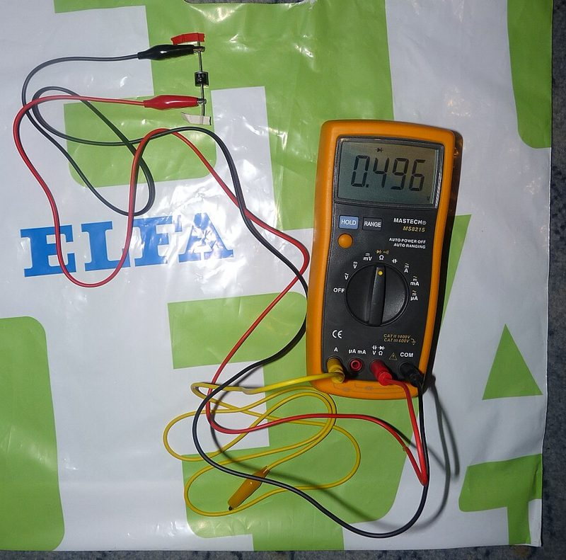
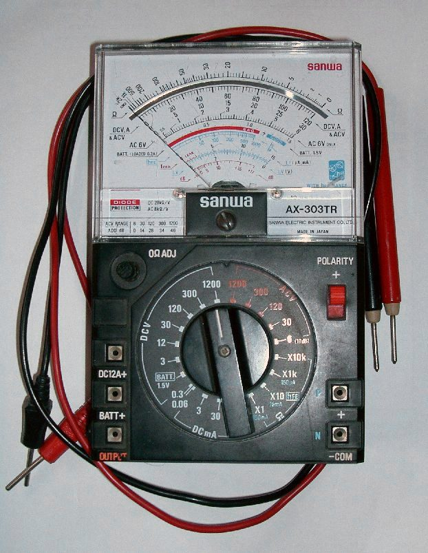

การวัดทดสอบไดโอด
และการอ่าน
คู่มืออุปกรณ์
4 ชั่วโมง วัดจริง ลองจริง ตัดสินเอง
| เวลา | กิจกรรม | นักเรียนทำอะไร |
|---|---|---|
| 0:00–0:15 | เปิดเรื่อง + ทบทวนสัปดาห์ที่ 1 | 🙋 ไดโอด 2 ตัว ตัวไหนเสีย? · โหวต |
| 0:15–0:30 | แบบทดสอบก่อนเรียน | 📱 ทำ 20 ข้อบนมือถือ |
| 0:30–1:15 | 5.1 กราฟคุณลักษณะ · 5.2 คู่มืออุปกรณ์ | 🙋 วาดกราฟทายก่อน · ตัวจำลอง · เกมเลือกเบอร์ |
| 1:15–1:25 | พัก | ☕ |
| 1:25–2:10 | 5.3 วัดด้วยมัลติมิเตอร์ · 5.4 วงจรหากราฟ | 🎬 คลิป · 🙋 หมอไดโอด · ฝึกคำนวณ |
| 2:10–3:20 | ใบงานที่ 1.2 | 🛠️ วัดของจริง หรือ 💻 แล็บเสมือน |
| 3:20–3:35 | แบบฝึกหัดออนไลน์ | 📱 ตรวจคำตอบทันที |
| 3:35–4:00 | สรุปหน่วยที่ 1 + แบบทดสอบหลังเรียน | 🎲 สุ่มตอบคำถาม · 📱 20 ข้อ |
การวัดทดสอบไดโอดและการอ่านคู่มืออุปกรณ์
5.1 กราฟคุณลักษณะของไดโอด
แรงดันคัตอิน · กระแสรั่วไหล · แรงดันพังทลาย
5.2 ค่าพิกัดในคู่มืออุปกรณ์
VRRM · IF(AV) · IFSM · VF · IR · เลือกเบอร์
5.3 วัดไดโอดด้วยมัลติมิเตอร์
โหมดทดสอบไดโอด · ดี ลัดวงจร ขาด รั่ว
5.4 วงจรหาค่าคุณลักษณะ
ID = (VS − VD) ÷ R · ไบแอสกลับ
เรียนจบวันนี้ นักเรียนสามารถ…
- อธิบายกราฟคุณลักษณะของไดโอดและค่าพิกัดสำคัญในคู่มืออุปกรณ์ได้ (4.4 K2)
- วัดทดสอบไดโอดด้วยมัลติมิเตอร์ และต่อวงจรหากราฟได้ตามขั้นตอน (4.5 S2)
- ใช้เครื่องมือวัดอย่างถูกวิธี ปลอดภัย และบันทึกค่าที่วัดได้จริง (4.6 A2)
- ตัดสินสภาพไดโอด ดี ลัดวงจร หรือขาด ได้ถูกต้อง (4.7 Ap1)
เกณฑ์ผ่าน: ร้อยละ 80 · ใบงานที่ 1.2 16 / 20 · แบบทดสอบ 16 / 20
หน้าตาเหมือนกันทุกอย่าง แต่ตัวหนึ่งเสีย จะรู้ได้อย่างไร?
- ดูด้วยตา บอกได้ไหม?
- ถ้ามีมัลติมิเตอร์ 1 เครื่อง จะวัดอย่างไร?
- ค่าที่อ่านได้แบบไหน = ดี แบบไหน = เสีย?
วัด 2 ทิศ แล้วเทียบกัน
ตัวที่ ① = 1N4007 · ตัวที่ ② = หมายเลข X · ดีหรือเสีย? เราจะรู้คำตอบภายในวันนี้ 🔍
ไบแอสตรงไดโอด ต้องต่อแหล่งจ่ายอย่างไร?
แรงดันกำแพงศักย์ของไดโอดซิลิกอนประมาณเท่าใด?
ยังไม่รู้ก็ไม่เป็นไร ตอบตามที่คิด!
เปิด แบบทดสอบ → เลือก “ก่อนเรียน” → ทำ 20 ข้อ → กดส่ง
quiz.html (ลิงก์อยู่ในหน้าแรกของวิชา)
กราฟคุณลักษณะ
ของไดโอด
ภาพเดียว เล่าพฤติกรรมไดโอดได้ทั้งหมด
กราฟ กระแส เทียบกับ แรงดัน
- แกนนอน = VD แรงดันตกคร่อมไดโอด
- แกนตั้ง = ID กระแสผ่านไดโอด
- ขวาบน = ไบแอสตรง · ซ้ายล่าง = ไบแอสกลับ
จากที่รู้เรื่องไบแอสแล้ว กราฟของไดโอดควรหน้าตาแบบไหน?
- วาดแกน VD และ ID เหมือนหน้าที่แล้ว
- ไบแอสตรง: ก่อน 0.7 V กระแสเป็นอย่างไร? หลัง 0.7 V ล่ะ?
- ไบแอสกลับ: มีกระแสไหม? ถ้าแรงดันย้อนกลับสูงมาก ๆ ล่ะ?
- ชูกระดาษพร้อมกันทุกกลุ่ม เทียบกับเฉลยหน้าถัดไป
อ่านกราฟ ทีละย่าน
- ไบแอสตรง: ถึง แรงดันคัตอิน กระแสจึงพุ่ง
- Ge คัตอินต่ำกว่า (0.3 V)
- ไบแอสกลับ: มีแค่กระแสรั่วไหล แทบคงที่
- ถึง VBR → กระแสพุ่ง ไดโอดทั่วไปเสีย
แรงดันคัตอิน = จุดหักโค้ง ของกราฟ
ซิลิกอน (Si)
ไดโอดส่วนใหญ่ที่ใช้งาน
เช่น 1N4007, 1N4148
เจอร์เมเนียม (Ge)
คัตอินต่ำกว่า
พบน้อยในงานปัจจุบัน
เรียกอีกชื่อว่า แรงดันเข่า (Knee) · ตรงกับแรงดันกำแพงศักย์ที่เรียนในสัปดาห์ที่ 1
เลื่อนไปทางขวา = ไบแอสตรง · ทางซ้าย = ไบแอสกลับ
ไดโอดซิลิกอนนำกระแสอยู่ ถ้ากระแสเพิ่มจาก 2 mA เป็น 8 mA แรงดันตกคร่อมจะเป็นอย่างไร?
ประมาณ VD ≈ 0.7 V → คำนวณกระแสได้ทันที
💡 สูตรเดียวกับสัปดาห์ที่ 1 · ที่มาของ “0.7 V” คือกราฟคุณลักษณะนี่เอง
ซิลิกอน 0.7 V · เจอร์เมเนียม 0.3 V
② Si · 9 V · R = 2.2 kΩ
③ Ge · 3 V · R = 1 kΩ
⚠️ ใช้ค่าประมาณเมื่อไดโอดนำกระแสแล้ว (แรงดันแหล่งจ่ายเกินคัตอิน) เท่านั้น
ย่านไบแอสกลับ: รั่วนิดหน่อย จนถึงจุด พัง
กระแสรั่วไหล (Leakage)
- กระแสน้อยมาก ระดับ µA
- แทบคงที่ แม้เพิ่มแรงดันย้อนกลับ
- ถือว่าไดโอด “กั้น” กระแส
แรงดันพังทลาย (VBR)
- ถึง VBR กระแสพุ่งทันที
- ไดโอดทั่วไปร้อนและเสียถาวร
- ต้องเลือก VBR สูงกว่าแรงดันย้อนกลับในวงจรเสมอ
🔜 ซีเนอร์ไดโอดออกแบบให้ทำงานในย่านพังทลายได้ ใช้รักษาระดับแรงดัน (หน่วยที่ 2) · 5 หน้าถัดไปขยายความ VBR ทีละเรื่อง
VBR = Breakdown Voltage = แรงดันพังทลาย
แยกชื่อทีละส่วน
| ตัวอักษร | มาจาก | แปลว่า |
|---|---|---|
| V | Voltage | แรงดัน |
| BR (ตัวห้อย) | BReakdown | พังทลาย / ทะลุผ่าน |
อ่านว่า “วี-บี-อาร์” · บางตำราเขียน V(BR) หรือ V(BR)R (R = Reverse ย้อนกลับ)
ความหมาย
แรงดันไบแอสกลับค่าที่ทำให้รอยต่อพีเอ็นหยุดกั้นกระแส กระแสย้อนกลับจึงเพิ่มจากระดับ µA เป็นระดับ mA–A อย่างรวดเร็ว
บนกราฟอยู่ฝั่งลบ จึงเขียนเป็น −VBR แต่เวลาพูดถึงค่า เราพูดเป็นตัวเลขบวก เช่น “VBR ประมาณ 1,000 V”
💧 เปรียบเทียบ: เขื่อนกั้นน้ำ → ซึมผ่านนิดหน่อย (= กระแสรั่วไหล) · ถ้าน้ำดันเกินที่เขื่อนรับได้ เขื่อนแตก น้ำทะลักทันที (= ถึง VBR)
ทำไมถึง “พัง”? → ปรากฏการณ์ หิมะถล่ม (Avalanche)
- ไบแอสกลับ → บริเวณปลอดพาหะกว้างขึ้น (สัปดาห์ที่ 1) ไดโอดกั้นกระแส
- ยังมีพาหะส่วนน้อยจำนวนน้อยมากข้ามได้ → คือกระแสรั่วไหล ระดับ µA
- เพิ่มแรงดันย้อนกลับ → สนามไฟฟ้าในรอยต่อแรงขึ้น เร่งพาหะเหล่านั้นให้วิ่งเร็วขึ้น
- ถึง VBR: พาหะเร็วจนชนอะตอมแล้วกระแทกอิเล็กตรอนให้หลุดออกมาเพิ่ม
- ตัวที่หลุดใหม่ถูกเร่งไปชนต่อ → ทวีคูณเป็นลูกโซ่ กระแสพุ่ง
1 → 2 → 4 → 8 → … เหมือนหิมะก้อนเล็กกลิ้งจนถล่มทั้งภูเขา
การพังทลายมี 2 แบบ
❄️ แบบหิมะถล่ม (Avalanche)
- พาหะถูกเร่งจนชนแล้วทวีคูณ (หน้าที่แล้ว)
- เกิดในรอยต่อที่เจือสารน้อย บริเวณปลอดพาหะกว้าง
- VBR สูง ระดับหลายสิบถึงหลายพันโวลต์
- พบในไดโอดเรียงกระแส เช่น 1N4001–1N4007
⚡ แบบซีเนอร์ (Zener)
- รอยต่อเจือสารมาก บริเวณปลอดพาหะบางมาก
- สนามไฟฟ้าแรงจนดึงอิเล็กตรอนหลุดจากพันธะโดยตรง ไม่ต้องชน
- VBR ต่ำ ประมาณไม่เกิน 5 V
- ตั้งชื่อตามนักฟิสิกส์ Clarence Zener
💡 ทั้ง 2 แบบเรียกรวมว่า “ย่านพังทลาย” บนกราฟ · ผู้ผลิตกำหนด VBR ได้จากปริมาณสารเจือ · ซีเนอร์ไดโอดที่เรียนหน่วยที่ 2 อาศัยทั้งสองแบบ
ตัวการที่ทำให้ไดโอดเสีย คือ ความร้อน P = V × I
① ไบแอสกลับปกติ
② ไบแอสตรงเต็มที่
③ ถึง VBR
- แรงดันสูงคูณกระแสที่พุ่ง → ร้อนจัดในตัวถังเล็ก ๆ → เสียถาวร มักเป็นลัดวงจร (วัดได้ 0.000 ทั้งสองทิศ)
- จำกัดกระแสด้วยตัวต้านทาน → ร้อนน้อย ไม่เสีย = หลักการใช้ซีเนอร์ไดโอด
VBR = จุดพังจริง · VRRM = ค่าที่ผู้ผลิตรับรอง
- VBR ของไดโอดแต่ละตัวไม่เท่ากัน และสูงกว่า VRRM เสมอ
- คู่มือจึงให้ VRRM เป็นค่าที่รับประกันว่าทนได้ซ้ำ ๆ แทน
- เราออกแบบโดยดู VRRM แล้วเผื่อ 2 เท่า → ไม่มีทางไปถึง VBR
- ตำราบางเล่มเรียกค่าใกล้เคียงกันว่า PIV (Peak Inverse Voltage)
ไดโอดเรียงกระแสทั่วไปได้รับแรงดันย้อนกลับเกิน VBR ผลคืออะไร?
วงจรที่ออกแบบถูกต้อง ค่าใดเรียงจากน้อยไปมากได้ถูกต้อง?
ซิลิกอน vs เจอร์เมเนียม
| หัวข้อ | ซิลิกอน (Si) | เจอร์เมเนียม (Ge) |
|---|---|---|
| แรงดันคัตอิน | ≈ 0.7 V | ≈ 0.3 V |
| ค่าที่โหมดทดสอบไดโอดแสดง | 0.5–0.7 | 0.2–0.3 |
| กระแสรั่วไหล เสริม | น้อยกว่า | มากกว่า |
| ใช้งานปัจจุบัน | ซิลิกอนเป็นส่วนใหญ่ | |
ไดโอดต่างชนิด แรงดันตกคร่อมไม่เท่ากัน
- สังเกตค่าแรงดันตกคร่อมของ 1N4007 (ซิลิกอน)
- เทียบกับ 1N5819 (ชอตต์กี) ที่รู้จักเมื่อสัปดาห์ที่ 1
- คลิปยาว ครูเลือกเปิดเฉพาะช่วง หรือให้ดูต่อที่บ้าน
แรงดันคัตอินคืออะไร
ซิลิกอนกับเจอร์เมเนียมมีค่าประมาณเท่าใด?
แรงดันที่จุดหักโค้งของกราฟไบแอสตรง เมื่อถึงค่านี้กระแสจึงเพิ่มขึ้นอย่างรวดเร็ว · Si ≈ 0.7 V · Ge ≈ 0.3 V
ค่าพิกัดใน
คู่มืออุปกรณ์
เปลี่ยนไดโอด ต้องดู “ตัวเลข” ไม่ใช่ “หน้าตา”
เอกสารที่ผู้ผลิตบอกคุณสมบัติและขีดจำกัด
1N4001 กับ 1N4007
หน้าตาเหมือนกันทุกประการ
แต่ทนแรงดันย้อนกลับ
50 V กับ 1000 V
ต่างกัน 20 เท่า!
ช่างต้องอ่านคู่มือ
ทุกครั้งก่อนเปลี่ยน
“ห้ามเกิน” กับ “วัดได้จริง”
⛔ พิกัดสูงสุด (Maximum Ratings)
ค่าที่ห้ามเกิน แม้ชั่วขณะ
VRRM · IF(AV) · IFSM
📏 คุณลักษณะทางไฟฟ้า (Electrical Characteristics)
ค่าที่วัดได้จริง ภายใต้เงื่อนไขที่ระบุ
VF · IR
5 ค่าที่ต้องอ่านเป็น
| ค่าพิกัด | สัญลักษณ์ | 1N4007 | ความหมาย |
|---|---|---|---|
| แรงดันย้อนกลับสูงสุดซ้ำ | VRRM | 1000 V | แรงดันไบแอสกลับสูงสุดที่ทนได้ |
| กระแสไบแอสตรงเฉลี่ย | IF(AV) | 1.0 A | กระแสเฉลี่ยที่ไหลได้ต่อเนื่อง |
| กระแสกระชากสูงสุด | IFSM | 30 A | กระแสชั่วขณะครึ่งคาบ เช่น ตอนเปิดเครื่อง |
| แรงดันตกคร่อมขณะนำกระแส | VF | 1.1 V ที่ 1.0 A | ค่าสูงสุดเมื่อนำกระแสเต็มพิกัด |
| กระแสรั่วไหลย้อนกลับ | IR | 5.0 µA ที่ 25 °C | ค่าสูงสุดที่แรงดันย้อนกลับเต็มพิกัด |
จำค่าพิกัดด้วย “ท่อน้ำกับวาล์วกันกลับ”
VRRM
วาล์วทนแรงดันย้อน
ได้แค่ไหนก่อนแตก
IF(AV)
ท่อปล่อยน้ำไหลต่อเนื่อง
ได้เท่าไร
IFSM
น้ำกระแทกแรงชั่วครู่
ตอนเปิดวาล์ว
⚠️ เป็นการเปรียบเทียบเพื่อช่วยจำ · ค่าจริงต้องดูจากคู่มือเสมอ
VF = 1.1 V แล้ว 0.7 V หายไปไหน?
วัดที่กระแสต่างกัน
- คู่มือ: วัดที่ 1.0 A (เต็มพิกัด)
- ห้องปฏิบัติการ: กระแสระดับ mA → วัดได้ 0.5–0.7 V
กระแสสูง = แรงดันตกเพิ่ม
มีแรงดันตกคร่อมความต้านทานภายในตัวผลึกเพิ่มขึ้น
ค่า 1.1 V เป็นค่าสูงสุด (maximum) ที่ผู้ผลิตรับประกัน
ตระกูล 1N4001–1N4007
| เบอร์ | 1N4001 | 1N4002 | 1N4003 | 1N4004 | 1N4005 | 1N4006 | 1N4007 |
|---|---|---|---|---|---|---|---|
| VRRM (V) | 50 | 100 | 200 | 400 | 600 | 800 | 1000 |
| IF(AV) | 1.0 A ทุกเบอร์ | ||||||
| IFSM · VF | 30 A · 1.1 V ทุกเบอร์ | ||||||
💡 เลขท้ายมาก = ทนแรงดันย้อนกลับสูง · 1N4007 ใช้แทนทุกเบอร์ในตระกูลได้ (ทนสูงสุด)
เผื่อไว้ก่อน อย่างน้อย 2 เท่า
แรงดัน
VRRM ≥ 2 × Vย้อนกลับสูงสุด
กระแส
IF(AV) > Iใช้งานจริง (พอสมควร)
ทำไมต้องเผื่อ? → แรงดันกระชากจากสายไฟ และความร้อนสะสม
เลือกเบอร์ในตระกูล 1N4001–1N4007
① แรงดันย้อนกลับสูงสุด 150 V
② แรงดันย้อนกลับสูงสุด 40 V
③ วงจรใช้กระแส 2 A → 1N400x ทนแค่ 1.0 A ไม่พอ ต้องหาไดโอดที่ทนกระแสสูงกว่า
อ่านโจทย์ → เลือกเบอร์ที่ พอดีที่สุด ตามหลักเผื่อ 2 เท่า
อ่านดาต้าชีทไดโอดเบอร์ 1N4001–1N4007
- หาค่า VRRM ของแต่ละเบอร์ในตาราง
- หาค่า IF(AV) และ IFSM
- ใช้ทบทวนก่อนทำใบงานตอนที่ 2 (ดูต่อที่บ้านได้)
ค่า VRRM และ IF(AV) หมายถึงอะไร
และใช้เลือกไดโอดอย่างไร?
💬 คุยในกลุ่ม 3 นาที แล้วสุ่มเลขที่ตอบ (ตัวสุ่มอยู่หน้าสรุป)
☕ พัก 10 นาที
กลับมาแล้วเราจะเป็น “หมอไดโอด” ใช้มัลติมิเตอร์ตรวจอาการกัน!
วัดทดสอบไดโอด
ด้วยมัลติมิเตอร์
วัด 2 ทิศ → ตัดสิน ดี · ลัดวงจร · ขาด · รั่ว
หมุนไปที่สัญลักษณ์ →|

- มิเตอร์จ่ายกระแสเล็ก ๆ ≈ 1 mA ออกจากสายสีแดง
- จอแสดงแรงดันตกคร่อมไดโอด เป็นโวลต์
- ภาพที่ 1.7: แดงที่ A ดำที่ K → แสดง 0.496 = นำกระแส
4 ขั้น วัดไดโอดได้ทุกตัว
- ปิดไฟเลี้ยงวงจรก่อนทุกครั้ง
- ตั้งมิเตอร์ที่โหมดทดสอบไดโอด (→|)
- แดงที่ A · ดำที่ K → จดค่า
- สลับสาย แดงที่ K ดำที่ A → จดค่า แล้วตัดสินสภาพ
ดูให้ทันว่า “สายแดงอยู่ขาไหน” ตอนจอขึ้นตัวเลข
- ตั้งย่านที่ใด?
- ทิศไหนขึ้นตัวเลข?
- ทิศไหนขึ้น OL?
ตารางหมอไดโอด 🩺
| สภาพไดโอด | แดงที่ A ดำที่ K | แดงที่ K ดำที่ A | หมายเหตุ |
|---|---|---|---|
| ดี (ซิลิกอน) | 0.5–0.7 | OL | นำกระแสทิศเดียว |
| ดี (เจอร์เมเนียม) | 0.2–0.3 | OL | แรงดันคัตอินต่ำกว่า |
| ลัดวงจร (Short) | ใกล้ 0.000 | ใกล้ 0.000 | มิเตอร์บางรุ่นส่งเสียงเตือน |
| ขาด (Open) | OL | OL | ไม่นำกระแสทั้งสองทิศ |
| รั่ว (Leaky) | ต่ำกว่าปกติ | มีค่าแสดง | ไม่ควรนำไปใช้งาน |
OL (Over Limit) หรือเลข 1 ด้านซ้าย = เกินย่านวัด · ค่า 0.5–0.7 เป็นค่าประมาณ ต่างกันตามเบอร์และมิเตอร์ (ภาพที่ 1.7 อ่านได้ 0.496 ก็ยังถือว่าดี)
ลองวัดไดโอดทุกตัว รวมทั้ง “ไดโอดปริศนา”
ผลวัดแบบนี้ ไดโอดป่วยเป็นอะไร?
ราย ①
ลัดวงจร
ราย ②
ดี (Si)
ราย ③
ขาด
ราย ④
รั่ว ห้ามใช้
วัดไดโอดในโหมดทดสอบไดโอดได้ 0.62 ทิศหนึ่ง และ OL อีกทิศ สายแดงตอนขึ้น 0.62 อยู่ขาใด?
⚠️ ข้อควรระวัง 3 ประการ
① ปิดไฟก่อนวัด
วัดไดโอดขณะไม่มีไฟเลี้ยงวงจรเสมอ
② วัดบนแผ่นวงจร
อุปกรณ์อื่นที่ต่อขนานทำให้ค่าเพี้ยน · ไม่ชัด → ถอดขาข้างหนึ่ง
③ มิเตอร์เข็ม
ย่านโอห์มขั้วกลับกัน: สายสีดำเป็นขั้วบวก
วัดไดโอดบนแผงวงจร ที่ไม่มีไฟเลี้ยง
- ช่างทำอะไรก่อนวัด?
- ค่าบนแผงวงจรต่างจากค่าที่วัดตัวเปล่าไหม?
- ช่วงทรานซิสเตอร์ข้ามได้ (เรียนหน่วยที่ 3)
สายสีดำ = ขั้วบวกของแบตเตอรี่ภายใน

| มิเตอร์ | ไบแอสตรงเมื่อ |
|---|---|
| ดิจิทัล (→|) | แดงที่ A |
| เข็ม (Ω) | ดำที่ A → เข็มขึ้น |
⚠️ นักเรียนที่สลับใช้มิเตอร์ 2 แบบ มักตัดสินขาผิดเพราะจุดนี้
วัดไบแอสตรง → วัดรั่ว ด้วยมิเตอร์เข็ม
- ขั้นแรกวัดไบแอสตรง ดูว่าช็อตไหม
- แล้ววัดรั่วด้วยย่าน ×10k
- ลองกดปุ่ม “มิเตอร์เข็ม” ในตัวจำลองดูด้วย
5 ข้อ ลุก-นั่ง ทั้งห้อง
| ข้อ | ข้อความ | เฉลย |
|---|---|---|
| 1 | วัดไดโอดบนแผงวงจรขณะเปิดเครื่องได้ จะได้ค่าจริง | ผิด ต้องปิดไฟ |
| 2 | ไดโอดดีจะขึ้นตัวเลขทิศหนึ่ง และ OL อีกทิศหนึ่ง | ถูก |
| 3 | OL ทั้งสองทิศ แปลว่าไดโอดลัดวงจร | ผิด = ขาด |
| 4 | มิเตอร์เข็ม เข็มขึ้นเมื่อสายดำอยู่ที่แอโนด | ถูก |
| 5 | ไดโอดรั่วยังใช้งานต่อได้ เพราะทิศหนึ่งยังนำกระแส | ผิด ไม่ควรใช้ |
วัดไดโอดขาด ช็อต รั่ว อย่างเข้าใจ
- ช่างอธิบายว่าต้องเข้าใจสเปคมิเตอร์และสเปคไดโอด
- เทียบกับตารางหมอไดโอดของเรา
- ไดโอดตัวหนึ่งวัดในโหมดทดสอบไดโอดได้ 0.000 ทั้งสองทิศ อยู่ในสภาพใด
- เหตุใดการวัดไดโอดด้วยมิเตอร์แบบเข็มจึงต้องวางสายสีดำที่ขาแอโนด
💬 คุยในกลุ่ม 2 นาที แล้วสุ่มเลขที่ตอบ
ต่อวงจร
หาค่าคุณลักษณะ
จากจุดเดียวบนจอ → กราฟทั้งเส้น
โหมดทดสอบไดโอด = กราฟแค่ 1 จุด
มิเตอร์จ่ายกระแสค่าเดียว (≈ 1 mA)
→ ได้ VD ค่าเดียว
อยากได้กราฟทั้งเส้น
→ ปรับแรงดันเป็นขั้น ๆ
แล้ววัดทีละจุด
VS 0–12 V · R 1 kΩ · D1 1N4007 · โวลต์มิเตอร์คร่อม D1
- ปรับ VS เป็นขั้น ๆ
- วัด VD ทุกขั้น (มิเตอร์เครื่องเดียว)
- คำนวณ ID จากกฎของโอห์มที่ R
ไม่ต้องย้ายสายไปวัดกระแส
ID = (VS − VD) ÷ R
ย้ายสายไปวัดกระแส เสี่ยงต่อแอมมิเตอร์ผิดจนฟิวส์ขาด
VS = 5 V · วัด VD ได้ 0.65 V · R = 1 kΩ
จุดบนกราฟ
(VD, ID) = (0.65 V, 4.35 mA)
ฝึกหาจุดบนกราฟอีก 2 จุด
② VS = 2 V · VD = 0.58 V
③ VS = 8 V · VD = 0.66 V
💡 VS เพิ่ม 4 เท่า (2 → 8 V) กระแสเพิ่ม ≈ 5 เท่า แต่ VD เพิ่มแค่ 0.08 V = ส่วนที่ชันของกราฟ
ไบแอสกลับ: VD ≈ VS และ ID ≈ 0
ตัวอย่าง: VS = 5 V กลับขั้ว D1
แปลว่าอะไร?
แรงดันตกคร่อมไดโอดทั้งหมด R ไม่มีแรงดัน → ไม่มีกระแส
ยืนยันว่าไดโอดกั้นกระแสในทิศนี้
ID = (VS − VD) ÷ R
| ข้อ | VS | VD ที่วัดได้ | ID |
|---|---|---|---|
| 1 | 3 V | 0.61 V | 2.39 mA |
| 2 | 10 V | 0.68 V | 9.32 mA |
| 3 | 1 V | 0.53 V | 0.47 mA |
| 4 | 10 V (กลับขั้ว) | 10.00 V | ≈ 0 |
ครูสาธิต 2–3 จุด แล้วนักเรียนทำครบในใบงานตอนที่ 3–4
ไดโอดอนุกรม R 1 kΩ จ่าย 10 V
วัด VD ได้ 0.68 V จงคำนวณกระแส
การวัดทดสอบไดโอด
และหากราฟคุณลักษณะ
4 ตอน · 20 คะแนน · ผ่าน 16 คะแนน
ทำได้ 2 ทาง
🛠️ ทาง ก: อุปกรณ์จริง
- มัลติมิเตอร์ดิจิทัล 1 เครื่อง/คน
- แหล่งจ่าย 0–12 V · แผงต่อวงจร · สายต่อ
- 1N4007 · 1N4148 · LED แดง · ไดโอด X, Y
- R 1 kΩ 0.5 W · คู่มือ 1N4007
💻 ทาง ข: แล็บเสมือน
- ตอนที่ 1: มัลติมิเตอร์เสมือน (2 หน้าถัดไป)
- ตอนที่ 2: ตารางคู่มือในสไลด์ 5.2
- ตอนที่ 3–4: วงจรเสมือน ภาพที่ 1.8
- เปิดบนมือถือ/คอมพิวเตอร์ได้
⚠️ 3 กฎก่อนจ่ายไฟ
- วัดด้วยโหมดทดสอบไดโอดขณะไม่มีไฟเลี้ยงวงจรเท่านั้น
- ปิดแหล่งจ่ายทุกครั้งก่อนเปลี่ยนหรือกลับขั้วไดโอด และให้ครูตรวจวงจรก่อนจ่ายไฟ
- ห้ามต่อไดโอดเข้ากับแหล่งจ่ายโดยไม่มีตัวต้านทานจำกัดกระแส
บันทึกค่าที่วัดได้จริง ไม่ลอกค่าจากเพื่อนหรือจากตัวอย่าง (ประเมินพฤติกรรม 15 คะแนน)
ตอนที่ 1–2
ตอนที่ 1 วัดด้วยมัลติมิเตอร์ (6 คะแนน)
วัดไดโอด 5 ตัว ทั้งสองทิศ (1N4007, 1N4148, LED แดง, X, Y) → บันทึกค่า → ตัดสินสภาพตามตารางหมอไดโอด
ตอนที่ 2 อ่านคู่มือ (3 คะแนน)
อ่าน VRRM IF(AV) IFSM VF ของ 1N4007 พร้อมหน่วย · วงจรย้อนกลับ 300 V ควรเลือกเบอร์ใด เพราะอะไร
ตอนที่ 3–4
ตอนที่ 3 ไบแอสตรง (8 คะแนน)
ต่อวงจรภาพที่ 1.8 → ปรับ VS = 0, 0.5, 1, 2, 3, 5, 8, 10 V → วัด VD → คำนวณ ID → เขียนกราฟ
ตอนที่ 4 ไบแอสกลับ (3 คะแนน)
ปิดแหล่งจ่าย กลับขั้วไดโอด → VS = 5 และ 10 V → วัด VD คำนวณ ID → สรุปพฤติกรรม
💡 รอคิวแหล่งจ่าย? ทำตอนที่ 2 ก่อนได้ · เขียนกราฟด้วยค่าที่วัดจริง ไม่ใช่ค่าจากสไลด์
มัลติมิเตอร์เสมือน: ไดโอด 5 ตัวของใบงาน
แล็บเสมือน: หาค่าคุณลักษณะไบแอสตรงและไบแอสกลับ
ครูตรวจวงจรก่อนจ่ายไฟทุกครั้ง ✋
พิมพ์ ใบงานที่ 1.2 · เสร็จก่อน? ไปทำ แบบฝึกหัดออนไลน์ ต่อได้เลย
20 คะแนน · ผ่าน 16 คะแนน (80%)
| ที่ | รายการประเมิน | คะแนน |
|---|---|---|
| 1 | วัดไดโอดครบทั้งสองทิศ ค่าอยู่ในช่วงที่ยอมรับ และตัดสินสภาพไดโอด X และ Y ถูกต้อง (ตอนที่ 1) | 6 |
| 2 | อ่านค่าพิกัด 1N4007 ถูกต้องพร้อมหน่วย และเลือกเบอร์ไดโอดพร้อมเหตุผลได้ (ตอนที่ 2) | 3 |
| 3 | ต่อวงจรถูกต้องก่อนจ่ายไฟ บันทึกค่าครบ คำนวณกระแสถูก และเขียนกราฟจากค่าจริง (ตอนที่ 3) | 8 |
| 4 | บันทึกค่าไบแอสกลับและสรุปพฤติกรรมของไดโอดได้ถูกต้อง (ตอนที่ 4) | 3 |
อ่านกราฟเป็น อ่านคู่มือเป็น
5.1 กราฟคุณลักษณะ
คัตอิน Si 0.7 V · Ge 0.3 V · หลังคัตอิน VD แทบคงที่ · ไบแอสกลับมีแค่กระแสรั่ว จนถึง VBR แล้วเสีย
5.2 คู่มืออุปกรณ์
1N4007: VRRM 1000 V · IF(AV) 1 A · IFSM 30 A · เลือก VRRM ≥ 2 เท่า
วัดเป็น ตัดสินเป็น
5.3 มัลติมิเตอร์
ดี = 0.5–0.7 / OL · ลัด = 0 / 0 · ขาด = OL / OL · ปิดไฟก่อนวัด · มิเตอร์เข็มสายดำ = บวก
5.4 วงจรหาค่าคุณลักษณะ
ID = (VS − VD) ÷ R · ไบแอสกลับ VD ≈ VS · ID ≈ 0
ตอนนี้เราเป็นช่างที่ “ดูไดโอดเป็น” แล้ว ✅
โครงสร้าง
สาร P, N
รอยต่อพีเอ็น
ชนิดและขา
สัญลักษณ์
แถบสี = K
คู่มือ
VRRM IF(AV)
เลือกเบอร์แทน
วัดทดสอบ
ดี ลัด ขาด รั่ว
กราฟคุณลักษณะ
🔜 สัปดาห์ที่ 3 หน่วยที่ 2: นำไดโอดไปทำวงจรเรียงกระแส ในแหล่งจ่ายไฟ
คำถามท้ายใบความรู้ 1.2 ทั้ง 5 ข้อ
- แรงดันคัตอินคืออะไร Si และ Ge ≈ เท่าใด
- VRRM และ IF(AV) หมายถึงอะไร ใช้เลือกไดโอดอย่างไร
- วัดได้ 0.000 ทั้งสองทิศ ไดโอดอยู่ในสภาพใด
- ทำไมมิเตอร์เข็มต้องวางสายดำที่ขาแอโนด
- 10 V · R 1 kΩ · VD 0.68 V กระแสเท่าใด
ทบทวน ฝึก แล้ววัดผล
แบบฝึกหัด
4 ชุด ตรวจคำตอบทันที
แบบทดสอบ 20 ข้อ
หลังเรียน (เทียบกับก่อนเรียน)
ใบงานที่ 1.2
พิมพ์ส่งครู
📖 สัปดาห์หน้า: หน่วยที่ 2 วงจรเรียงกระแสและวงจรกรองแรงดัน
คลิปวิดีโอในบทเรียน
- [V1] somMCU. ไดโอด ช็อทกี้ กับ ซิลิกอน ยอมให้ไฟไหลผ่านที่แรงดันตกคร่อมอย่างน้อยเท่าไร เบอร์ 1N5819 กับ 1N4007 (13:20). https://www.youtube.com/watch?v=2-yww2coPWQ
- [V2] Cars & Electronics. ดาต้าชีทไดโอดเบอร์1N4001-1N4007 (13:17). https://www.youtube.com/watch?v=P2yKWbtsLxU
- [V3] สุพล การรัม. วิธีวัดไดโอดด้วยมิเตอร์ดิจิตอล (1:25). https://www.youtube.com/watch?v=baAMBUisG-I
- [V4] CEW Media. EP.43 การวัดไดโอดและทรานซิสเตอร์ในวงจร ที่ไม่มีไฟเลี้ยงด้วยมิเตอร์ดิจิตอล (6:35). https://www.youtube.com/watch?v=V7WJJUDH260
- [V5] ครูวิ ซ่อมได้. การวัดไดโอด โดยมัลติมิเตอร์ (4:58). https://www.youtube.com/watch?v=DwwDEbKSkR8
- [V6] ELECTECH_88. Test Diode วัดไดโอดอย่างเข้าใจ (คลิปนี้มีคำตอบ) วัดไดโอดขาด ซ๊อต รั่ว (10:02). https://www.youtube.com/watch?v=GpmfzcubeRk
ตรวจสอบรหัสคลิปและการเล่นในหน้าเว็บ (playableInEmbed) เมื่อ 25 ตุลาคม 2569 · ความยาวคลิปตามที่ YouTube แสดง
เอกสารอ้างอิง และเครดิตภาพ
- จิรกิตติ์ วราภรณ์. แผนการจัดการเรียนรู้ วิชา 20127-2004 อุปกรณ์และวงจรอิเล็กทรอนิกส์ (หลักสูตร ปวช. 2567 สาขาวิชาเมคคาทรอนิกส์และหุ่นยนต์) หน่วยที่ 1 ใบความรู้ที่ 1.2 ใบงานที่ 1.2 และแบบทดสอบหลังเรียนหน่วยที่ 1. วิทยาลัยเทคนิคอุตรดิตถ์. (เอกสารต้นฉบับของบทเรียนนี้)
- Boylestad, R. L., & Nashelsky, L. (2013). Electronic Devices and Circuit Theory (11th ed.). Pearson. (กราฟคุณลักษณะ สมการไดโอด การเปรียบเทียบ Si กับ Ge)
- Vishay General Semiconductor. (2020, April 29). 1N4001 thru 1N4007 General Purpose Plastic Rectifier (Doc. 88503). https://www.vishay.com/docs/88503/1n4001.pdf
เข้าถึงแหล่งข้อมูลออนไลน์เมื่อ 25 ตุลาคม 2569